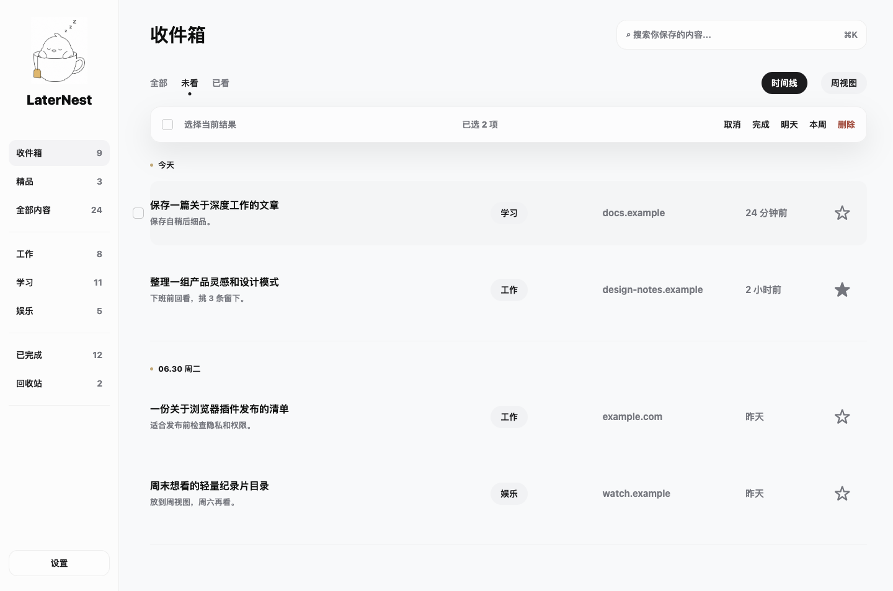
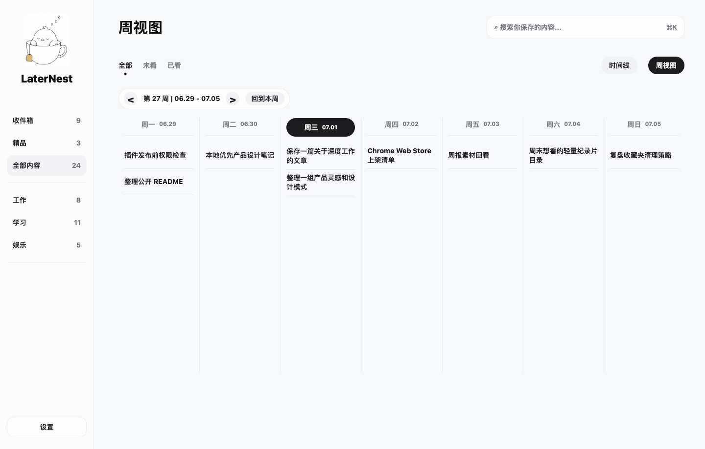
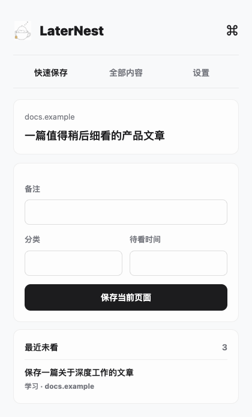

Capture title, URL, domain, note, category, and reminder time from the active tab.
A local-first Chrome read-later workspace
Bring saved links back into a place you actually review.
LaterNest turns the current tab into a calm reading queue, then gives you timeline, week view, categories, and bulk triage to make saved links actionable again.

Saving is easy. Returning is the hard part.
Bookmarks become heavy, chat messages scatter, and many read-later tools stop at capture. LaterNest gives links a quiet inbox and a workflow for coming back, reviewing, and clearing them.
Designed for repeated triage.
LaterNest stays intentionally small: no article scraping, no account system, no new feed. Just the surfaces needed to save, group, review, and clean up links.
Review by date, or switch into a weekly planner to see what has accumulated.
Complete, postpone, or delete multiple saved links without turning cleanup into another chore.
Work, Study, Fun, and status totals stay visible in the sidebar.
Mark the links worth returning to so high-value items do not disappear into the queue.
If you configure a Feishu/Lark webhook, LaterNest can send pending links to your own bot.
From today’s inbox to a weekly review.
All public screenshots use fictional sample data. They do not include real page titles, webhooks, browsing history, or private links.


Local-first by default.
LaterNest has no account system and no hosted database. Saved links stay in your browser through Chrome local storage. Data is only sent out if you explicitly configure a Feishu/Lark webhook.
Install from GitHub source.
The current version is meant to be loaded in Chrome Developer Mode. It is easy to try, fork, and adapt as a personal local tool.
- Download or clone this GitHub repository.
- Open
chrome://extensions/. - Enable Developer Mode.
- Click Load unpacked.
- Select the LaterNest repository folder.